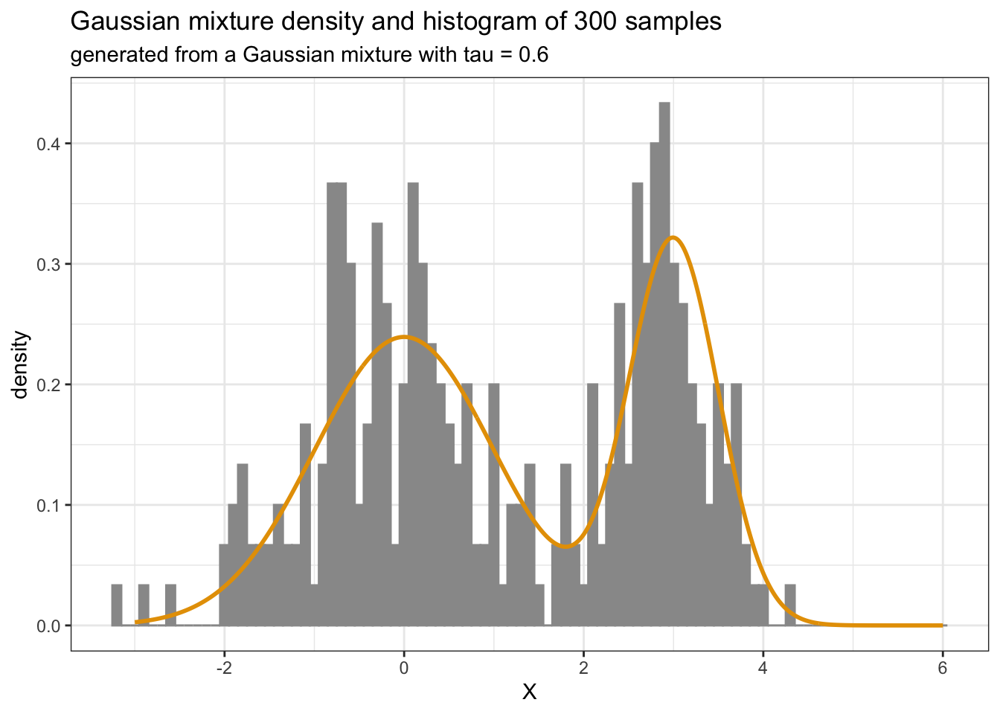

Go to the course GitHub organization and locate the repo titled ae-2-YOUR_GITHUB_USERNAME to get started.
1 Recap: Kernel Density Estimation
Remember that the Kernel Density Estimation (KDE) of \(f\) based on \(X_1,\ldots,X_N\) is \[\widehat{f}(x) = \frac{1}{n h_n} \sum_{i=1}^n K\left(\frac{X_i - x}{h_n} \right),\] where the \(K(\cdot)\) satisfies:
We saw in the lecture that the choice of the bandwidth \(h\) is crucial for the performance of the KDE. In this assignment we will explore this in more detail with a simulation study. Specifically:
generate data from a Gaussian mixture with density function \(f\) (see Section 3)
repeat the following \(200\) times:
generate \(N=100\) samples from the Gaussian mixture
perform density estimation, i.e. obtain \(\widehat{f}\), for
calculate the error measure \(\| f - \widehat{f} \|_2\)
report your findings as a single (well commented) figure
3 Gaussian mixture
The two functions below allow for random number generation and density evaluation for the Gaussian mixture distribution \[f(x) = (1-\tau) \varphi_{\mu_1,\sigma_1^2}(x) + \tau\varphi_{\mu_2,\sigma_2^2}(x).\]
Code
# random generation for a mixture of two normal distributionsrmixnorm <-function(N, mu1, mu2, sigma1, sigma2, tau){ ind <-I(runif(N) > tau) X <-rep(0,N) X[ind] <-rnorm(sum(ind), mu1, sigma1) X[!ind] <-rnorm(sum(!ind), mu2, sigma2)return(X)}# density evaluation for a mixture of two normal distributionsdmixnorm <-function(x, mu1, mu2, sigma1, sigma2, tau){ y <- (1-tau)*dnorm(x,mu1,sigma1) + tau*dnorm(x,mu2,sigma2)return(y)}
A sample call is below.
Code
library(ggplot2)N <-300mu1 <-3mu2 <-0sigma1 <-0.5sigma2 <-1tau <-0.6X <-rmixnorm(N, mu1, mu2, sigma1, sigma2, tau)x <-seq(-3, 6, by =0.01)fx <-dmixnorm(x, mu1, mu2, sigma1, sigma2, tau)ggplot() +theme_bw() +aes(X, after_stat(density)) +geom_histogram(colour ="#999999", fill ="#999999", binwidth =0.1) +geom_line(aes(x, fx), colour ="#E69F00", linewidth =1) +labs(title ="Gaussian mixture density and histogram of 300 samples",subtitle ="generated from a Gaussian mixture with tau = 0.6")

Similar functions will be provided for Python and Julia in the assignment repository.
Source Code
---title: "Assignment 2"subtitle: "Bandwidth selection in Kernel Density Estimation"date: 10-06-2023format: html: code-fold: true code-tools: trueeditor: visualnumber-sections: true---::: callout-important**Due date: 11:59pm on Sunday, 15 October 2023.**:::::: callout-noteGo to the [course GitHub organization](https://github.com/MATH-517) and locate the repo titled `ae-2-YOUR_GITHUB_USERNAME` to get started.:::## Recap: Kernel Density EstimationRemember that the Kernel Density Estimation (KDE) of $f$ based on $X_1,\ldots,X_N$ is$$\widehat{f}(x) = \frac{1}{n h_n} \sum_{i=1}^n K\left(\frac{X_i - x}{h_n} \right),$$where the \textbf{kernel} $K(\cdot)$ satisfies::::: {.columns}::: {.column width="40%"}1. $K(x) \geq 0$ for all $x \in \mathbb{R}$2. $K(- x) = K(x)$ for all $x \in \mathbb{R}$3. $\int_\mathbb{R} K(x) d x = 1$:::::: {.column width="10%"}<!-- empty column to create gap -->:::::: {.column width="40%"}4. $\lim_{|x| \to \infty} |x| K(x) = 0$5. $\sup_x |K(x)| < \infty.$:::::::```{r, fig.dim=c(10,2.5)}#| fig-cap: "Impact of the bandwidth on KDE, where the Gaussian kernel is in black, the Epanechnikov kernel in blue and the rectangular kernel in red."plot_kdes <- function(bw){ plot(density(faithful$eruptions, kernel="gaussian", bw=bw), main=paste("bandwidth = ",bw,sep=""), xlab="time [min]") lines(density(faithful$eruptions, kernel="epanechnikov", bw=bw), col=4) lines(density(faithful$eruptions, kernel="rectangular", bw=bw), col=2)}par(mfrow=c(1,4), mar = c(3.2, 3, 1.6, 0.2))plot_kdes(1); plot_kdes(0.5); plot_kdes(0.25); plot_kdes(0.1)```where the kernels are defined as:| Kernel Name | Formula ||----------------------------|-------------------------------------------------------|| Epanechnikov | $K(x) \propto (1-x^2) \mathbb{1}_{[|x| \leq 1]}$ || Gaussian | $K(x) \propto \exp(-x^2/2)$ || Rectangular | $K(x)=\frac{1}{2} 1_{\{-1<x<1\}}$ |## TaskWe saw in the lecture that the choice of the bandwidth $h$ is crucial for the performance of the KDE. In this assignment we will explore this in more detail with a simulation study. Specifically:* generate data from a Gaussian mixture with density function $f$ (see @sec-GaussianMixture)* repeat the following $200$ times: - generate $N=100$ samples from the Gaussian mixture - perform density estimation, i.e. obtain $\widehat{f}$, for - Gaussian, Epanechnikov, and rectangular kernels - bandwidth values $h = 0.1,0.15,0.2,0.25,\ldots,0.9$ - calculate the error measure $\| f - \widehat{f} \|_2$* report your findings as a single (well commented) figure## Gaussian mixture {#sec-GaussianMixture}The two functions below allow for random number generation and density evaluation for the Gaussian mixture distribution $$f(x) = (1-\tau) \varphi_{\mu_1,\sigma_1^2}(x) + \tau\varphi_{\mu_2,\sigma_2^2}(x).$$```{r}#| code-fold: show# random generation for a mixture of two normal distributionsrmixnorm <-function(N, mu1, mu2, sigma1, sigma2, tau){ ind <-I(runif(N) > tau) X <-rep(0,N) X[ind] <-rnorm(sum(ind), mu1, sigma1) X[!ind] <-rnorm(sum(!ind), mu2, sigma2)return(X)}# density evaluation for a mixture of two normal distributionsdmixnorm <-function(x, mu1, mu2, sigma1, sigma2, tau){ y <- (1-tau)*dnorm(x,mu1,sigma1) + tau*dnorm(x,mu2,sigma2)return(y)}```A sample call is below.```{r}library(ggplot2)N <-300mu1 <-3mu2 <-0sigma1 <-0.5sigma2 <-1tau <-0.6X <-rmixnorm(N, mu1, mu2, sigma1, sigma2, tau)x <-seq(-3, 6, by =0.01)fx <-dmixnorm(x, mu1, mu2, sigma1, sigma2, tau)ggplot() +theme_bw() +aes(X, after_stat(density)) +geom_histogram(colour ="#999999", fill ="#999999", binwidth =0.1) +geom_line(aes(x, fx), colour ="#E69F00", linewidth =1) +labs(title ="Gaussian mixture density and histogram of 300 samples",subtitle ="generated from a Gaussian mixture with tau = 0.6") ```Similar functions will be provided for Python and Julia in the assignment repository.